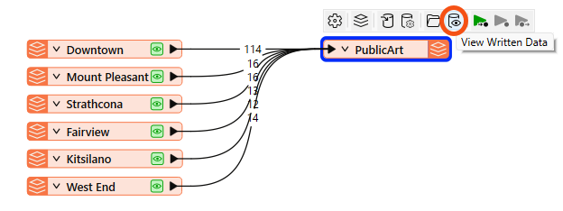

After completing this lesson, you’ll be able to:
Continue with your workspace in FME Workbench (2026.1 or later),
Click View Written Data on the PublicArt writer feature type to open the geodatabase in Data Preview.

You can view the data now, but it is presented with little context. We want to get a general sense of where most art installations are located. We know from experience that viewing the data with a background map can help with this task. In general, we should add a background map to spatial data when we want to:
To use a background map, your dataset must have a known coordinate system either stored in the data itself or explicitly specified. If your data doesn’t look as you expect when you add a background map, you likely have a coordinate system problem.
FME Workbench may already have a background map configured if you are taking a Safe Software-hosted training course. You can still follow along to learn how to do it.
To add a background map to Data Preview, right-click on the Graphics View pane and select Background Map > Default Terrain.
We can select Default Terrain because it does not require an account.
There are many background map services available under Switch to new background map... if you prefer to use a different service.
The background map appears in the Graphics View. We can quickly see that most art installations are in the Downtown neighborhood and the central and northern areas shown below.

Map tiles © Stadia Maps, © OpenMapTiles, © OpenStreetMap contributors, © Stamen Design
We find that new FME users sometimes have trouble keeping track of all the windows within Workbench. You might want to review Workbench's window management. If you ever lose a window, consider using View > Windows > Restore Default Layout.
In the FME Workbench menu bar, use Tools > FME Options > Background Maps (or FME Workbench > Preferences > Background Maps on a Mac), or right-click the Graphics view and choose Background Map to swap to a different background map using the Default Dark instead of the Default Terrain layer.
Next, try using the View Source Data button on the Mount Pleasant reader feature type, and note the number of features it contains. You'll need that number for the quiz.